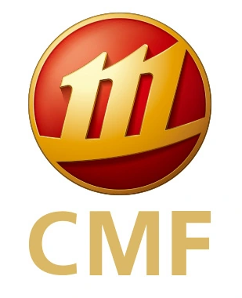
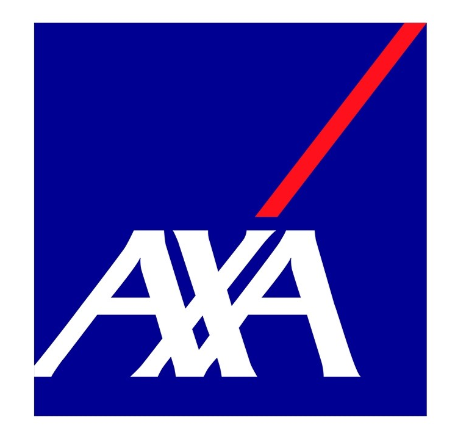

- Assisted with data consolidation, document preparation, and market research.
- Supported private placement roadshows and other investor events.
- Completed additional tasks assigned by supervisors.
🎓 Education
The Chinese University of Hong Kong, Shenzhen
QS World University Rankings 2026: #32
B.B.A. in Finance (School of Management and Economics)
09/2022 - 07/2026
GPA: none
Ranking: none
Key courses: Financial Management, Foundation of Finance, Financial Economics, Corporate Finance, Introductory Econometrics, Calculus, Linear Algebra, Probability and Statistics, Optimization
🔬 Internships
 China Merchants Futures
Business Assistant
05/2025 - 08/2025
 AXA Hong Kong and Macau
Wealth Management Advisor
02/2025 - 03/2025
- Developed and implemented comprehensive family asset allocation strategies to optimize wealth preservation, growth, and risk management.
- Obtained a recommendation letter from the corporate executive finally.
Monte Carlo Fund Management
FOF Researcher
Advisor: Prof. Xianghui Yuan (Xi'an Jiaotong University)
Department: School of Economics and Finance of Xi'an Jiaotong University
12/2024 - 02/2025
- I recommended potential funds for the company's 2025 FOF portfolio, which were ultimately recognized and adopted by the company's project team. 😎
- By observing market data and conducting in-depth research, I discovered a possible effective factor by using JoinQuant Software to test single factors of stocks.
Sealand Securities
Wealth Advisor
Advisor: Mr. Hairui Zuo
05/2024 - 06/2024
- Activated a client's investment account efficiently after gathering client information, verifying compliance, and submitting the application.
📝 Projects
Quantitative Stock Selection Project Using CSMAR Database
Subject: Investment Analysis and Portfolio Management (FIN3080)
Instructor: Prof. Jingfan Zhang (CUHK-SZ)
Spring 2025
- Collected and cleaned A-share market data (2009–2023) from CSMAR, including monthly prices, quarterly financials, and daily volatility; constructed monthly P/B ratios and excluded outliers.
- Conducted a cross-sectional regression at end-2010, finding significant positive relationships between P/B, ROE, and volatility (R² = 13.3%).
- Built ten equal-weighted portfolios sorted by P/B deciles; backtested from 2010 to 2023 and found low P/B portfolios consistently outperformed high P/B ones, supporting value investing strategies.
- Completed the entire data pipeline, regression analysis, and visualization using Stata.
🌟 Scholarships & Honors
🏆 Awards
- In Progress ??/????
🏫 Exchange/Visiting Program
- COMM3939 Film Directors (Mr. SHIN Chi Man Thomas): Explored the relationship between the film and their directors regarding their creativity, aesthetics and influences. Film is an art and the director is an artist.
- UGEC1540 Government and Politics of China (Prof. Gerald CHAN): Surveied key issues in Chinese politics, including the historical background of the Chinese political system, the roles of the party/state, the style of leadership, the forms of popular participation, and the distinctive features of Chinese politics. The focus of this course is political change.
🏅 Competition Experiences
- 2022 S&P Global Corporate Valuation Challenge (CVC) 10/2022
- 2023 China Undergraduate Mathematical Contest in Modeling (CUCMC)07/09/2023 - 10/09/2023
- 2025 U.S. Mathematical Contest In Modeling (MCM/ICM) 24/01/2025 - 28/01/2025
🛠️ Certificates & Skills
- Certificates: CET-6, CET-4
- Programming languages: Python (Familiar), R (Familiar), SQLite (Basic), Stata (Basic)
- Tools: Word/PowerPoint/Excel(Proficient), Matlab, LATEX, Markdown, VSCode
- Database: CSMAR, Choice, Wind, WRDS, JoinQuant Platform
🤝 Club & Extracurricular Activities
SME Toastmasters Club
Position: Member
09/2022-Present
- The SME Toastmasters Club is a speech club under the Career Development Center of the School of Management and Economics, The Chinese University of Hong Kong, Shenzhen. It aims to enhance members' English public speaking, communication and leadership skills through weekly meetings, corporate visits, workshops and other activities, and help them achieve their career development goals.
Harmonia College: Ancient Glass Art on the Silk Road
Advisor: Prof. Bohan Li (CUHK-SZ)
Location: Shenzhen Museum, Shenzhen
04/03/2023
- Went with Professor Bohan Li from the School of Humanities and Social Sciences to visit the Ancient Glass Art Exhibition on the Silk Road at the History and Folklore Museum of Shenzhen Museum.
- Organized discussions and shared experiences of the exhibition.